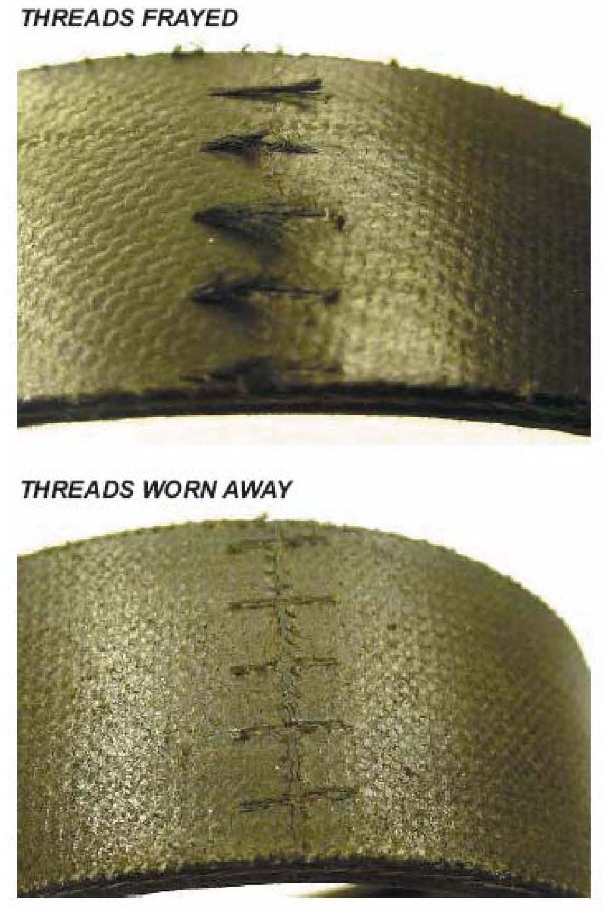

Engine - Drive Belt Fraying May Be Normal
Frayed Drive Belt Might Be Normal Belt WearIf you've got a vehicle in your shop, and you notice the threads on the drive belt Joint look frayed or worn away, don't think you need to replace the belt. It just might be normal belt wear. During drive belt manufacturing, those fine yarn threads at the belt joint hold the fabric backing together until the rubber is vulcanized on the belt. Once that happens, those threads aren't really needed anymore.

The small amount of threads sticking out from the belt won't cause any noise or functional problems, and they'll eventually wear away.